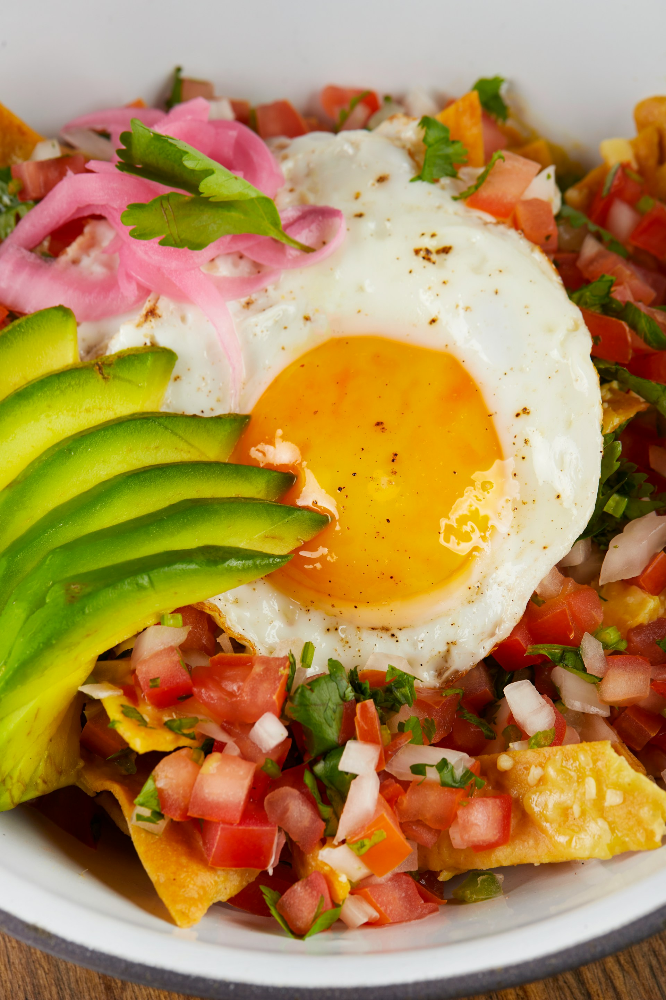

Chilaquiles with Homemade Tomato Sauce

Description
These chilaquiles with homemade tomato sauce will bring back your experiences of breakfast in Mexico. Fried tortilla wedges are cooked briefly in a homemade tomato-chile sauce, and topped with a fried egg, crema, avocado, and queso fresco.
Ingredients
- 16 (6-inch) corn tortillas
- 2 cups oil, or as needed for frying
- 1 teaspoon kosher salt, plus more to taste
- 2 cups water
- 2 guajillo chiles, stems and seeds removed
- 1 white onion, quartered
- 3 cloves garlic
- 4 ripe tomatoes, quartered
- 2 jalapenos, halved
- 1 teaspoon ground cumin
- 1 (14.5 ounce) can fire-roasted diced tomatoes
- 2 teaspoons red wine vinegar
- 1 tablespoon olive oil
- 4 large eggs
- 1/2 cup crumbled queso fresco
- 1 avocado, sliced
- 1/4 cup crema
- sliced radish, hot sauce, chopped cilantro, for garnish (optional)
Directions
- Cut each tortilla into 8 wedges. Heat oil to 350 degrees F (180 degrees C) in a large pot over medium-high heat. Add tortillas to fry in batches, taking care not to crowd the pot. Cook, stirring constantly until golden and crispy, 1 to 2 minutes. Remove from oil with a slotted spoon and drain well on paper towels. Sprinkle with salt to taste immediately. Repeat with remaining tortillas.
- In a large saucepan, add water and guajillo chiles. Bring mixture to a boil over high heat, reduce temperature, and simmer until chiles soften, about 5 minutes. Return heat to medium-high and add onion, garlic, tomatoes, jalapenos, cumin, and 1 teaspoon salt. Cook, stirring occasionally, until onion has softened, about 10 minutes.
- Remove from heat and carefully pour mixture into a blender or food processor. Add canned tomatoes, vinegar, and olive oil. Remove center from the lid to allow steam to escape and blend until smooth, about 1 minute, scraping down the sides as necessary.
- In a large skillet over medium heat, add 1 cup of sauce and bring to a simmer, stirring often. Add 1/4 of the chips and cook about 3 minutes, stirring frequently, until the chips are well-coated in sauce and fully heated through. Place chips on a plate.
- In a separate small skillet, heat 1/2 tablespoon butter over medium heat. Crack an egg into the butter and cook over easy or as desired. Add egg to chips and top with queso fresco, avocado, crema, and any other desired toppings.